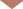
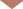

特集
2019年5月26日「ルウェンゾリ山地国立公園」

標高ごとに変わる風景 数々のユニークな動植物
 
異様な光景を作り出す巨大な高山植物
ルウェンゾリ山地を登っていくとさらに風景が変化して、ほかではあまり見られない景色が現れます。そこからさらに進むと、いよいよ赤道直下にも関わらず氷河を抱く山頂付近へ到達します。

──日本のような緯度だと標高3000メートル以上となると生物が生きるのには厳しい環境ですが、ルウェンゾリでは多様な生物が見られるのですね。
小澤：そうなんです。とはいえ、夜は氷点下になる過酷な環境です。標高3500メートルにかつて氷河が削ってできた湖、ブジェク湖があります。これくらいの標高になると、先ほども言ったように大きな木は生えないのですが、この湖周辺には、高さ8メートルもの植物がにょきにょき生えていて、まるで別の惑星に迷い込んだかのような、不思議な風景が広がっているのです。

ブジェク湖の周辺に巨大植物ジャイアントセネシオが生えている様子は、まるで地球外の惑星に降り立ったかのような不思議な風景です。

──映像を見ると確かに不思議な形の木ですね。
小澤：いえ、これはジャイアントセネシオという植物で、キク科の草です。どうして草がこれほど巨大化したのかはよくは分かっていません。葉は枯れても落ちず幹に付いたままで、寒さから身を守るための断熱材になっています。
──環境に対応するために、独特な姿になったということですね。
小澤：さらに高度が上がるジャイアントセネシオ以外にも、高さ5mほどの巨大な植物が見られるようになります。これは、ジャイアントロベリアという植物で、やはり草の仲間です。こちらは寒さから身を守るために、葉が変化した毛で覆われています。暖かくなると、ジャイアントロベリアの花にサンバードという体長10センチほどの小さな鳥がやってきて蜜を吸います。標高4000メートル付近なので、受粉を助ける虫があまりいないため、その役割をこの鳥が担っているのです。
ジャイアントロベリアは葉が変化した毛で寒さから身を守ります。暖かくなり花が咲くと、蜜を求めてやってきたサンバードが受粉を助けます。
──厳しい環境の中でも、独自の生態系が作り出されているのですね。
小澤：山頂付近の標高4500メートルにある山小屋まで登っていくと、いよいよ植物も減り、むき出しの岩場が多くなります。山小屋に宿泊して山頂付近の撮影に臨んだのですが、夜明け前に雪が降り出しました。赤道直下に降る雪です。限られた条件の中でなんとか山頂付近の氷河をドローンで撮影することができました。氷河の向こうにそびえる、5109メートルのルウェンゾリ最高峰を映像で捉えましたので、ぜひご覧ください。
ルウェンゾリ山地では赤道直下にもかかわらず雪が降り、山頂付近には氷河があります。
──ルウェンゾリ山地国立公園には、本当に幅広い自然があるんですね。最後に、視聴者へひと言お願いします。
小澤：実は、私がルウェンゾリ山地国立公園を取材するのは今回が2度目で、9年前に一度撮影に訪れています。撮影した映像を見比べると、前回の取材時より氷河が明らかに薄くなっていました。また、ジャイアントセネシオがより高い岩場に生息域を広げていると分かりました。これは、地球温暖化の影響で、そうした環境の変化を感じていだければと思います。また、9年前には撮影できなかった、ドローンを使った空からの映像もふんだんに盛り込んで、ルウェンゾリのユニークな風景をお見せしますので楽しんでください。
9年前より、ジャイアントセネシオが高い標高で見られるようになったり、山頂の氷河が薄くなっているなど、ルウェンゾリ山地国立公園にも地球温暖化の影響が及んでいます。